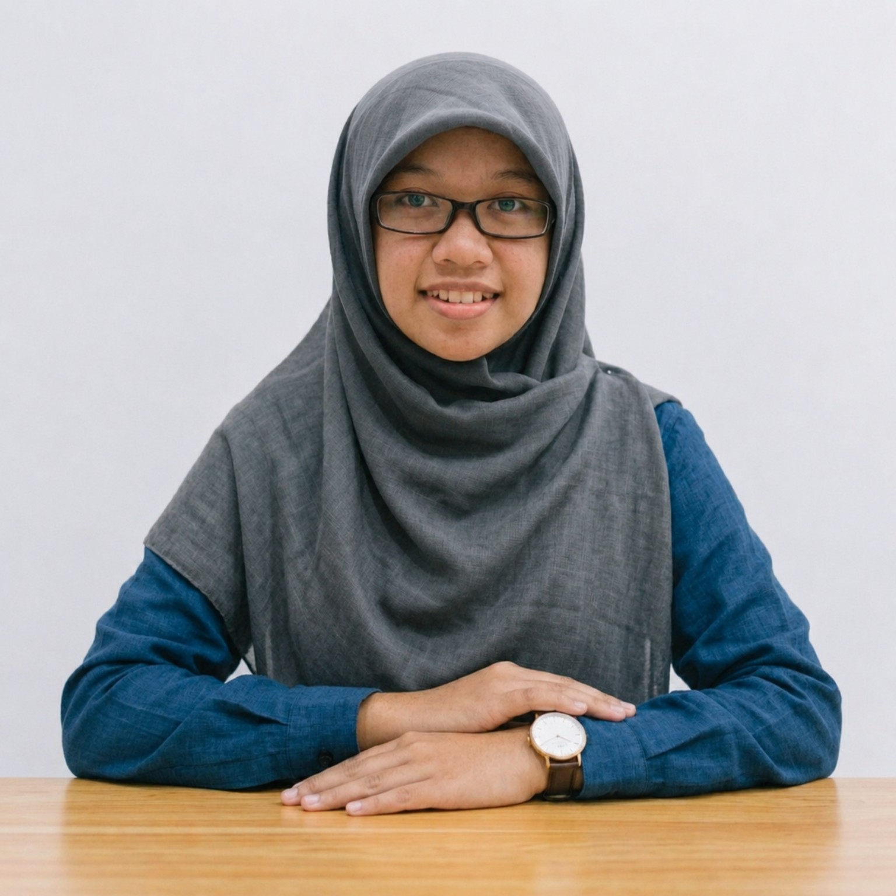

TEACHER · EDUCATOR · LIFELONG LEARNER

I teach, I learn, I create, and I keep growing. This is my little space to share my journey, experiences, projects, and stories from education.
Explore My Journey →01 · ABOUT
I am an educator who enjoys learning, teaching, creating, and sharing meaningful experiences.
Throughout my journey in education, I have had the opportunity to experience different sides of teaching — from everyday classroom moments to educational projects, youth activities, and community initiatives. Each experience has taught me something new and shaped the way I see education.
I created this website as a little space to document that journey. Here, I share stories from teaching, projects I have worked on, things I have learned, and small moments that I believe are worth remembering.
I don't have everything figured out, and perhaps that's the point.
I am still learning, still exploring, and still finding new ways to make education meaningful — one experience at a time.
Welcome to my little corner of the internet.
02 · TEACHING
Stories and experiences from my everyday teaching journey.
Activities and ideas that I explore with students.
Things my students have taught me along the way.
Learning, teaching, and growing — one experience at a time.
04 · STORIES
A space for stories, reflections, small discoveries, and meaningful moments along the way.